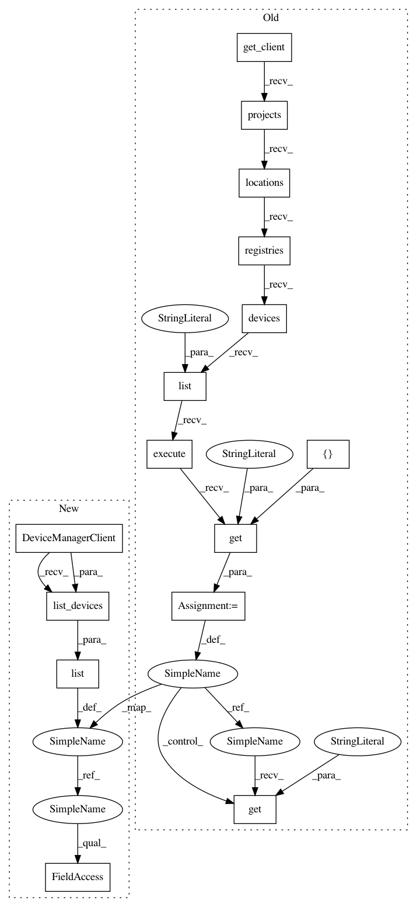

223abdede96295f7fba58a1d1e1fb63a961c33f5,iot/api-client/manager/manager.py,,list_gateways,#Any#Any#Any#Any#,679
Before Change
service_account_json, project_id, cloud_region, registry_id):
Lists gateways in a registry
// [START iot_list_gateways]
client = get_client(service_account_json)
registry_path = "projects/{}/locations/{}/registries/{}".format(
project_id, cloud_region, registry_id)
devices = client.projects().locations().registries().devices(
).list(
parent=registry_path, fieldMask="config,gatewayConfig"
).execute().get("devices", [])
for device in devices:
if device.get("gatewayConfig") is not None:
if device.get("gatewayConfig").get("gatewayType") == "GATEWAY":
print("Gateway ID: {}\n\t{}".format(device.get("id"), device))
// [END iot_list_gateways]
After Change
service_account_json, project_id, cloud_region, registry_id):
Lists gateways in a registry
// [START iot_list_gateways]
client = iot_v1.DeviceManagerClient()
path = client.registry_path(project_id, cloud_region, registry_id)
mask = iot_v1.types.FieldMask()
mask.paths.append("config")
mask.paths.append("gateway_config")
devices = list(client.list_devices(parent=path, field_mask=mask))
for device in devices:
if device.gateway_config is not None:
if device.gateway_config.gateway_type == 1:
print("Gateway ID: {}\n\t{}".format(device.id, device))
// [END iot_list_gateways]
In pattern: SUPERPATTERN
Frequency: 3
Non-data size: 15
Instances
Project Name: GoogleCloudPlatform/python-docs-samples
Commit Name: 223abdede96295f7fba58a1d1e1fb63a961c33f5
Time: 2019-10-09
Author: gguuss@gmail.com
File Name: iot/api-client/manager/manager.py
Class Name:
Method Name: list_gateways
Project Name: GoogleCloudPlatform/python-docs-samples
Commit Name: 223abdede96295f7fba58a1d1e1fb63a961c33f5
Time: 2019-10-09
Author: gguuss@gmail.com
File Name: iot/api-client/manager/manager.py
Class Name:
Method Name: list_gateways
Project Name: GoogleCloudPlatform/python-docs-samples
Commit Name: 223abdede96295f7fba58a1d1e1fb63a961c33f5
Time: 2019-10-09
Author: gguuss@gmail.com
File Name: iot/api-client/manager/manager.py
Class Name:
Method Name: create_device
Project Name: GoogleCloudPlatform/python-docs-samples
Commit Name: 223abdede96295f7fba58a1d1e1fb63a961c33f5
Time: 2019-10-09
Author: gguuss@gmail.com
File Name: iot/api-client/manager/manager.py
Class Name:
Method Name: create_gateway